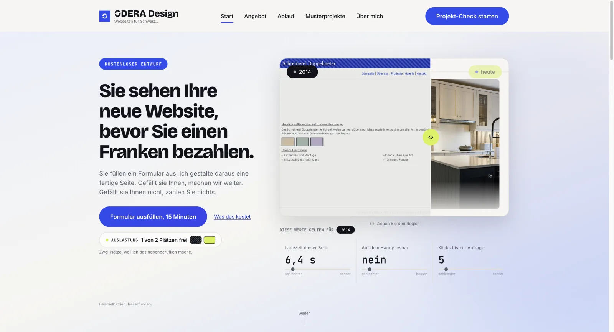

Musterfirma
Tel. 044 000 00 00
Startseite
Leistungen
Vorgehen
Kontakt
NEU
» Über uns
» Leistungen
» Referenzen
» Vorgehen
» Kontakt
Herzlich Willkommen
BildWillkommen auf unserer Internetseite. Seit vielen Jahren bieten wir unseren Kunden in der Region zuverlässige Dienstleistungen an. Auf den folgenden Seiten erfahren Sie mehr über unser Angebot und unser Vorgehen.
BildKontaktieren Sie uns für ein unverbindliches Gespräch. Wir freuen uns, von Ihnen zu hören und gemeinsam die passende Lösung zu finden.
Bild
Letzte Aktualisierung: 12.03.2011
003417
ODERA — Websites für kleine Unternehmen
odera.ch ↗Mein eigenes Angebot für Websites — Konzept, Umsetzung und Betrieb aus einer Hand.
Regler oben: illustrative Darstellung zum Vergleich, kein Kundenprojekt.